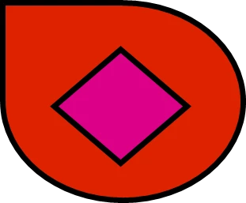

서구(효빈광역시)
1. 개요

효빈광역시 서부에 위치한 자치구. 교육지역에 해당하며, 효빈대학교가 위치한다.
2. 역사
효빈시에 1963년 구제가 실시되면서 생긴 3개구 중 하나로, 구가 생긴 초반에는 사능1~2동 지역과 소조동, 해서동도 서구 관할이었지만, 1971년 북구 신설로 이관되어 현재와 같은 영역이 되었다.
3. 인구
| 연도 | 인구 | 그래프 (35만 기준) |
|---|---|---|
| 1963년 1월 1일 효빈시 북부출장소, 탄성군 고송면 일부(과진리, 청덕리, 사복리) → 서구 설치 | ||
| 1966년 | 170,309명 | |
| 1970년 | 298,267명 | |
| 1971년 3월 2일 효빈시 서구 일부 → 효빈시 북구 이관 | ||
| 1975년 | 170,548명 | |
| 1980년 | 227,448명 | |
| 1985년 | 241,394명 | |
| 1990년 | 287,037명 | |
| 1995년 | 279,970명 | |
| 2000년 | 260,772명 | |
| 2005년 | 234,260명 | |
| 2010년 | 212,197명 | |
| 2015년 | 240,852명 | |
| 2020년 | 252,632명 | |
| 2025년 7월 | 270,388명 | |
|
* 인구는 현재 행정구역이 아닌 해당 연도 행정구역 기준, 그래프 최대 값은 35만 명. * 1966-1990: 통계청 인구총조사, 1995-현재: 행정안전부 주민등록인구통계 |
||
1990년 과진지구 개발 종료 이후 1992년 302,234명을 정점으로 인구가 감소하기 시작하였으며, 2010년에는 20만 붕괴 직전까지 갈 상황에 놓였지만, 청덕판자촌 재개발과 사복동 아파트 개발, 과진1지구 재개발 등으로 인해 인구가 다시 증가하기 시작하면서 2025년에는 27만명을 회복하였다. 그와 별개로 인구밀도는 효빈에서 가장 높은 지역으로, 면적이 상대적으로 좁은 편이기 때문이다.
4. 지역 특징
효빈의 교육특화지역에 해당하며 효빈덕북권 최대의 대학교이자 지방거점국립대학교인 효빈대가 있으며, 의료도 효빈대병원이 있어 최상급에 속한다. 효빈대 외에도 효빈과기원, 중촌대, 해총대, 효빈복지대 등이 있는 대학교가 매우 밀집된 동네이며, 북성동 쪽을 제외하고 대학교가 한 동네에 1개 이상씩 위치한 것도 특이한 지점 중 하나이다.
지역별로 세부적으로 보면 구 효빈면 지역인 현재 북성동과 법정동 칠천동 지역은 구도심, 당선동은 교육지구이자 서구 행정중심지, 과진동은 덕현동 다음의 한때 차세대 택지지구로 개발되던 지역, 사복동은 당선동과 짝을 이루는 동네, 청덕동은 과거 가장 낙후되고 슬럼화되어 있던 동네였지만 최근 재개발을 통해 성장이 기대되는 동네라고 할 수 있다.
효빈대학교가 위치해 있는 당선동 쪽은 대학로 상권이 활성화 되어있지만 과진동 쪽은 고송동 개발 이후 연담화 되어 자체 상권은 부족한 상황이며, 때문에 청덕동이나 고송동, 중수동, 중구 재개발지로 인구가 유출되고 있는 상황이며, 청덕동의 인구가 늘어나는 것이 좀 커서 인구가 급락하는 것은 막고 있는 상황이다. 교육지구 답게 학교도 인구대비 많은 편이고, 대학교 통학 인구로 인해 유동인구는 꽤 많다는 것이 특징이다.
5. 교통
■ 관내 도시철도역 목록
| 노선명 | 역명 |
|---|---|
| 2호선 | 청덕, 과진중앙, 사복, 당선, 효빈대학교, 칠천, 소장 |
| 3호선 | 효빈복지대학교, 과진, 청덕, 송덕 |
| 5호선 | 청덕공원, 화환, 효빈과학기술원, 당선 |
| 7호선 | 북문로, 효빈성북문, 구 칠천군사기지앞, 당선원마을, 효빈대학교입구 |
5.1. 7호선 트램 사수 투쟁
2006년 당시 시장 윤대환은 "도로 흐름을 방해하는 흉물"이라며 7호선 폐선을 시도했다. 이에 분노한 효빈대 총학생회와 서구 주민들이 '트램 사수 결의대회'를 열고, 선로 위에 드러누워 포크레인을 막아내는 등 격렬하게 저항하여 지켜냈다. 이 사건 이후 7호선 트램의 경적 소리('땡땡')는 서구 주민들에게 "민주주의의 승전보"이자 "승리의 소리"로 각인되었다. 사실상 핌피(PIMFY)의 승리
6. 관광
전통적인 관광지로는 효빈성 북문, 구 칠천군사기지공원 등이 있으나, 최근에는 서브컬처 성지순례가 새로운 관광 트렌드로 자리 잡았다.
6.1. 서브컬처 성지: "효빈가사키(Hyobin-gasaki)"
효빈대학교(HBNU)는 애니메이션 [러브라이브! 니지가사키 학원 스쿨 아이돌 동호회]의 배경인 '니지가사키 학원(도쿄 빅사이트)'과 소름 돋게 닮은 외관 덕분에 "한국의 니지가사키", 줄여서 "효빈가사키"로 불린다.
- 본관 (The Big Sight): 역삼각형 구조물이 결합된 미래지향적 디자인이 도쿄 빅사이트와 판박이다. 주말이면 광장에서 춤을 추는 코스어들을 쉽게 볼 수 있다.
- 7호선 트램 (School Idol Train): 캠퍼스를 관통하는 트램은 축제 기간 동안 '스쿨 아이돌 랩핑 열차'로 변신한다.
6.2. 주요 성지순례 역
- 화환(Hwahwan)역: 한자(花丸)가 러브라이브 선샤인의 '쿠니키다 하나마루'와 같다. 역무실 벽면이 팬들의 노란색 포스트잇("즈라!")으로 도배되어 있다.
- 당선(Dangseon)역: 역명(當選) 덕분에 선거철이나 수능 철이 되면, 애니메이션 속 학생회장 캐릭터 굿즈를 들고 와서 기도를 올리는 미신이 유행한다.
- 청덕공원역: 청덕(靑德)이라는 이름이 '푸른 덕후'를 연상시킨다며, 팬들이 모여 야외 피크닉(정모)을 하는 장소다.
7. 경제
효빈에서 하위권에 해당한다. 교육부문이 경제적인 면이 조금 적은 편인 것과 소비 대부분이 내부보다는 고송신도시나 중앙로로 가서 이뤄지는 점, 2011년 당선동에 갤러리아가 들어오기 전에는 마땅한 쇼핑시설이 대형마트를 제외하고는 없었던 점, 인구 대부분이 학생이 많은 점도 경제적인 소득 평균이 하위권인 편의 이유로 보인다. 심지어 관광도 효빈성 북문이나 효빈대학교 정도로 매우 적기 때문에 관광수요도 얼마 없다.
대규모 공단은 없지만, 지식 서비스업과 상업 밀집도는 효빈시 최고 수준이다. 최근에는 '오타쿠 경제(Otaku Economy)'가 새로운 성장 동력으로 부상했다.
- 당선역 상권: 2호선과 5호선이 만나는 서구 최대 번화가. 갤러리아백화점 효빈점이 위치하며, 최근 서브컬처 콜라보 팝업 스토어를 연달아 유치하며 오픈런 행렬을 만들었다.
지갑 전사들의 성지 - 대학로 상권: "김치찌개 5,000원"을 유지하는 가성비 식당들과 함께 메이드 카페, 애니송 코인노래방 등이 공존한다.
- 과진동 스타트업 밸리: 효빈과학기술원(HIST) 인근으로, 기술 벤처와 3D 프린팅 공방들이 입주해 '효빈의 실리콘밸리'로 불린다.
8. 교육
※ 족포초는 현 시장인 박효빈의 모교이며, 과거 시장이 학교폭력을 당했을 때 당시 같은 반이던 가해자 윤재훈이 시장 아들이라는 이유로 폭력을 방관한 일화가 있다. 내성동 인구 급감으로 2024년 폐교되었으며, 현재는 그 자리에 정신건강증진센터가 생겼다.
인구 대비 학교가 꽤 많은 지역으로, 윗쪽 고송신도시 남부 지역 학생수요까지 맡을 정도로 꽤 많은 수이다.
10. 의료기관
대학병원이자 상급의료기관이며 덕북효빈권에서 가장 큰 의료기관인 효빈대병원(1,382병상)이 있는 구이다. 이외에도 종합병원이 몇 개 더 있어 의료방면으로는 꽤나 좋은 편에 속하는 지역이다.
11. 정치
효빈광역시 전체를 통틀어 가장 진보 성향이 강하면서도, 동시에 유권자들의 '소신 투표' 성향이 가장 뚜렷하게 나타나는 청년 정치의 최전선.
효빈대학교와 효빈과학기술원(HIST) 등 주요 대학이 밀집한 '대학 도시'라는 특성상 2030 청년 인구 비율이 압도적으로 높다. 이 때문에 기성 보수 정당에게는 선거철마다 기탁금을 걱정해야 하는 '사지(死地)' 중의 사지로 꼽히며, 반대로 더불어민주당을 비롯한 진보 및 제3지대 정당에게는 최고의 텃밭으로 분류된다.
11.1. 보수 정당의 완벽한 무덤과 '윤대환 PTSD'
서구 주민들, 특히 대학생들과 원도심 주민들에게 과거 보수 정당 소속이었던 윤대환 전 시장과 그 일당은 '공공의 적'이자 '도시의 낭만을 파괴하려 한 테러리스트'로 각인되어 있다.
- 7호선 트램 사수 투쟁: 2006년 윤대환 시장이 "트램은 도로의 흉물"이라며 서구의 심장인 7호선 폐선을 강행하려 하자, 분노한 효빈대 학생들과 서구 주민들이 선로에 드러누워 포크레인을 막아낸 전설적인 사건이다. 이 사건 이후 서구에서 보수 정당은 "학생들의 통학권을 빼앗고 두청운수(버스)의 배를 불리려 한 부패 세력"으로 완전히 낙인찍혔다.
- 괴작 로고 강제 적용: 서구청장이 윤대환으로부터 살해 협박(...)을 받아 억지로 서구의 로고를 기괴하고 촌스러운 디자인으로 바꿨던 흑역사가 있다. 십수 년간 이 로고가 박힌 쓰레기봉투와 고지서를 봐야 했던 서구 주민들의 보수 정당 비토 정서는 상상을 초월한다.
- 윤재훈의 난동: 2024년 총선 당시 보수 진영의 윤재훈이 9.99%라는 굴욕적인 득표율을 비관하며 효빈대에 난입해 혐오 발언을 쏟아내다가, 공대생들의 팩트 폭격에 멘탈이 털리고 신발 한 짝을 잃어버린 채 도주한 사건은 서구 보수 정당의 현주소를 상징적으로 보여준다.
오죽하면 잃어버린 신발이 효빈대 박물관에 '침입자의 최후'로 전시되어 있다.
11.2. 제3지대의 돌풍과 냉철한 '소신 투표'
진보세가 강하다고 해서 무조건 더불어민주당에 몰표를 던지는 맹목적인 지역은 결코 아니다. 대학생과 이공계 연구원들이 주축을 이루는 만큼, 이슈에 따라 제3지대(정의당, 개혁신당 등)에 15~20% 이상의 유의미한 표를 던지는 냉철한 소신 투표 성향을 띤다.
- 기성 정치에 대한 반란 (당선동): 효빈대가 위치한 당선동 일대(당선1~4동)에서는 제9회 지선 당시 이변이 일어났다. 거대 양당의 독점에 피로감을 느낀 청년 유권자들이 개혁신당 소속의 유원민(시의원)과 가바람(구의원)을 당선시키는 기염을 토했다. 이는 서구가 단순히 민주당의 거수기가 아님을 증명한 상징적인 사건이다.
- 이공계의 분노 (과진동): 2024년 제22대 총선 당시, 윤석열 정부의 'R&D 예산 삭감' 사태는 과진동의 HIST(효빈과학기술원) 연구원들과 공대생들의 역린을 정통으로 건드렸다. 그 결과 더불어민주당 지선진 후보에게 무려 82.5%(과진4동 기준)에 달하는 분노의 철퇴 몰표가 쏟아졌다.
11.3. 주요 정치인 열전 (서구의 트로이카)
현재 서구의 정치를 이끄는 세 명의 거물들은 각기 다른 서사로 구민들의 압도적인 지지를 받고 있다.
▶ 지선진 (제22대 국회의원 / 더불어민주당)
"81.55%의 압승을 이끈 96년생 행시 패스 엘리트"
27세의 나이에 제22대 총선에서 무려 81.55%라는 경이로운 득표율로 국민의힘 기규택 후보(12.22%)를 더블 스코어도 아닌 6배 차이로 압살하며 국회에 입성했다. 동구대 출신이지만 같은 1996년생인 박효빈 효빈시장(효빈대 출신)과 '96즈 청년 연대'를 형성하며 20대 유권자들에게 폭발적인 인기를 끌고 있다. 얼굴도 예쁘고 머리도 좋은데 정치까지 잘하는 기믹 파괴자.
▶ 노서현 (제38~40대 서구청장 / 더불어민주당)
"서구 역사상 최초의 3선 구청장, 바닥 민심의 제왕"
1972년생 서구 청덕동 판자촌 출신으로, 구의원 2선, 시의원 1선, 구청장 3선이라는 엘리트 테크트리를 밟은 입지전적인 인물이다. 판자촌이었던 청덕동을 명품 아파트 단지로 재개발시킨 주역. 시장 출마를 접고 후배인 부서원에게 구청장 자리를 물려준 뒤, 차기 총선에서 서구가 '갑/을'로 분구될 경우 신설 지역구 국회의원으로 출마할 0순위 후보로 거론되며 막강한 지배력을 행사하고 있다.
▶ 부서원 (제41대 서구청장 / 더불어민주당)
"12.3 계엄령이 낳은 보수의 마지막 양심, 70.2%의 대승"
본래 국민의힘 소속으로 중구 상인회장을 지내던 전도유망한 보수 청년 정치인이었으나, 2024년 '12.3 비상계엄 선포 사태'에 큰 충격을 받고 "헌정 질서를 유린하는 정당에 남을 수 없다"며 전격 탈당하여 민주당으로 이적했다. 이적생임에도 불구하고 그의 강직한 소신과 뛰어난 경제 감각(청하건설 대표이사)을 높이 산 서구 주민들이 제9회 지선에서 70.20%의 압도적인 표를 몰아주며 화려하게 구청장으로 부활시켰다.
11.4. 동별 정치 지형 요약
- 당선동 (효빈대 상권): 학생과 자취생 비율이 높아 진보 성향이 베이스로 깔려 있으나, 기성 정당의 실책에 가장 민감하게 반응하는 캐스팅 보터. 개혁신당 등 제3지대 후보가 직접적인 의석을 배출하는 마의 구간이다.
- 과진동 (HIST 스타트업 밸리): 이공계 연구원과 화이트칼라 직장인이 다수 거주한다. 합리적 진보 성향이 강하며, 윤석열 정부의 R&D 예산 삭감 이슈 이후 보수 정당 지지율이 11~13%대까지 폭락하며 완전히 민주당 텃밭으로 굳어졌다.
- 청덕동 (신축 아파트 단지): 낙후된 판자촌에서 노서현 전 구청장의 주도로 깔끔한 주거지로 재개발된 곳. 3040 젊은 부부들이 대거 입주하면서 제22대 총선 당시 지선진 후보에게 서구 최고 득표율인 85.11%(청덕1동)를 몰아주며 '신흥 민주당 요새'로 떠올랐다.
- 북성동 (구도심): 서구에서 유일하게 인구가 적은 구도심 지역. 고령층 비율이 상대적으로 높아 그나마 보수 정당 지지세가 '가장 센' 곳이지만, 그래 봤자 제22대 총선 기준 국민의힘 득표율이 17.75%에 불과하다.
서구 보수 진영의 눈물겨운 최대 득표처다.
11.1. 선거구 정보
 효빈광역시 서구 국회의원/시의원/구의원 선거구
효빈광역시 서구 국회의원/시의원/구의원 선거구
| 국회의원 | 시의원 | 구의원 | 지역 |
|---|---|---|---|
| 서구 | 서구제1선거구 | 가 | 당선1동, 당선2동, 당선3동, 당선4동, 북성동 |
| 서구제2선거구 | 나 | 과진1동, 과진3동, 과진4동 | |
| 다 | 과진2동, 과진5동, 사복1동, 사복2동 | ||
| 서구제3선거구 | 라 | 과진6동, 과진7동 | |
| 마 | 청덕1동, 청덕2동, 청덕3동 |
11.1.1. 구의회
| 효빈광역시 서구의회 원내 구성 | |
|---|---|
| 제9대 의회 (2022.7.1. ~ 2026.6.30.) | |
| 더불어민주당 | 개혁신당 |
| 12석, 구청장 소속 정당 | 1석 |
| 재적 13석 | |
11.2. 역대 선거 결과
| 효빈광역시 서구 국회의원 선거 결과 | |||
|---|---|---|---|
| 대수 | 선거구 | 당선자 | |
| 13대 | 서구 | 평화민주당 구임준 | |
| 14대 | 서구 | 민주당 구임준 | |
| 15대 | 서구 | 자유민주연합 강석현 | |
| 16대 | 서구 | 자유민주연합 강석현 | |
| 17대 | 서구 | 열린우리당 조영태 | |
| 18대 | 서구 | 통합민주당 주민태 | |
| 19대 | 서구 | 민주통합당 두영민 | |
| 20대 | 서구 | 국민의당 두영민 | |
| 21대 | 서구 | 더불어민주당 상신고 | |
| 22대 | 서구 | 더불어민주당 지선진 | |
| 역대 민선 효빈광역시 서구청장 선거 결과 | ||||
|---|---|---|---|---|
| 1995 | 1998 | 2002 | 2006 | 2010 |
| 민주당 | 자유민주연합 | 자유민주연합 | 무소속 | 민주당 |
| 권수현 | 조서원 | 조서원 | 민영만 | 조영만 |
| 2014 | 2018 | 2022 | 2026 | |
| 새정치민주연합 | 더불어민주당 | 더불어민주당 | 더불어민주당 | |
| 노서현 | 노서현 | 노서현 | 부서원 | |
12. 하위 행정구역
효빈광역시 서구의 하위 행정구역 현황은 다음과 같다. 동구랑은 분위기가 딴판이다.

▲ 서구 행정동 지도. 복잡해 보인다면 기분 탓이 아니다(...)
행정동별 상세 정보
1. 과진1~7동 (課津1~7洞)
관할 법정동은 과진동이다. 서구에서 가장 인구가 많은 지역이며, 다만 상권이 고송신도시에 종속된 점으로 자체 상권보다는 당선동이나 고송동을 주로 이용하는 베드타운 느낌의 동네이다.
- 과진1동 (5,135명): 효빈광역시 행정동 중에 면적이 안천1동과 함께 작은 편에 속하는 동네로, 인구도 적은 편이다.
- 과진2동 (13,419명): 롯데마트 과진점이 있다.
- 과진3동 (14,039명): 3호선 과진역이 위치하며, 학교는 과성초가 있다.
- 과진4동 (10,115명): 효빈서부경찰서가 위치한 동네로, 학교는 효빈서초, 과진고, 운진중, 과한초가 있다.
- 과진5동 (11,815명): 효빈항역이 위치한 동네로, 학교는 월흥초, 운양초, 평안초, 효빈남중, 은화학교가 있다. 운양초와 2호선 운양역은 운양동이 아닌 이동네에 있다.
- 과진6동 (28,435명): 효빈과기원과 해총대학교, 2호선 과진중앙역이 이동네에 있다. 학교는 신북중, 운촌초, 주산초, 산진초가 있다.
- 과진7동 (7,771명): 학교는 과진초, 과진중이 있다.
2. 당선1~4동 (当選1~4洞)
관할 법정동은 당선동이며, 당선4동은 추가로 칠천동을 관할한다. 서구에서 과진동과 함께 중심지 역할을 하는 동네로, 행정, 교육중심이기도 하다. 효빈대학교는 주소지가 당선동으로 되어있고, 일부 지역은 소조동에 걸쳐있다. 대학병원의 경우 칠천동과 사능동의 경계에 있다.
- 당선1동 (16,055명): 효빈대학교 남서부를 관할하고 있다. 학교는 칠천초, 내성초, 태이초, 내죽고가 있다.
- 당선2동 (15,461명): 2, 5호선 환승역인 당선역과 2호선 효빈대학교역이 이동네에 있으며 효빈대학교 북서부를 관할하는 동네이다. 갤러리아백화점 효빈점도 이동네에 있다. 학교는 당선여고, 효빈대사대부고가 있으며, 1동과 함께 효빈대학교 학생들이 가장 많이 자취하는 동네이다.
- 당선3동 (23,689명): 학교로는 당선초, 당선중, 당선고, 효빈대 사범대 부설중학교, 은안초가 있다.
- 당선4동 (14,285명): 서구청과 효빈서부소방서가 이동네에 있으며 칠천동과 내성동2가 일부와 사능동1가 일부, 소조동 일부에 걸쳐 효빈대학교 병원이 있고, 주소지는 칠천동이다. 학교는 헌산초, 헌산중, 칠천중, 성내초가 있다.
3. 청덕1~3동 (青徳1~3洞)
관할 법정동은 청덕동이다.
- 청덕1동 (24,997명): 원래 판자촌인 화환마을과 달동네가 있던 동네였지만 현재 재개발 계획이 진행중으로 철거되었다. 학교로는 신산초, 청덕초, 나살리초, 나살리중, 나살리고가 있다.
- 청덕2동 (7,656명): 2호선과 3호선의 환승역인 청덕역과 중촌대학교가 이 동네에 있다. 원래 과진개발에 힘입어 인구가 많은 편이었지만 고송신도시 개발로 인구 유출이 심화, 슬럼화 되었지만 현재 슬럼지역을 철거하고 재개발 진행중이다. 학교는 효빈서중, 효빈서여고, 서구초, 효빈서초(과진동에서 옮겨올 예정), 효빈체육중, 체육고가 있다.
- 청덕3동 (31,931명): 고송동 발달로 인구가 오히려 증가한 동네이다. 학교는 미아초, 서구중, 효빈북고, 청덕중, 청덕고가 있다.
4. 사복1~2동 (社福1~2洞)
13. 기타

- 이전 구 로고가 너무 촌스럽고 뭘 의미하는지 모르겠다는(…) 의견이 많다. 이렇게 된 이유는 효빈 최악의 시장 윤대환 시장이 몇 안 되게 성공한 뻘짓이었기 때문이었다.
- 구청장이 시청으로부터 살해협박을 받아(…) 로고를 바꿨는데 그때 유일하게 바뀐 로고이다 보니 당연히 평가가 안 좋고 꾸준히 로고 변경을 시도하려고 했지만 서구의 인구가 계속 줄었기도 하고 세수도 계속 줄던 상황에서 1년 안에 매우 졸속으로 바꿨던 로고가 퍼졌던 바람에 교체 비용으로 인해 몇 년 동안 참고 쓰는 상황이 되었다가 청덕지구 재개발로 다시 인구가 늘어나자 2015년 새로운 로고 초안이 제작되기 시작해 현재 로고로 변경되었다.